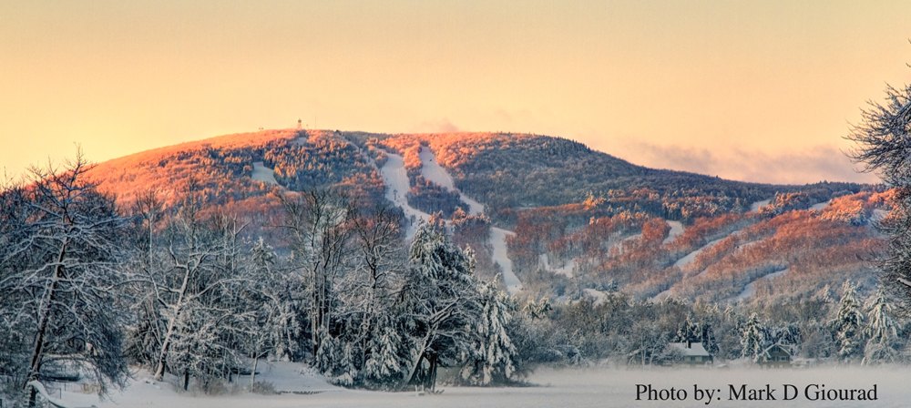

Mountains in New England

The Highest Points of the Earth
Mountains are the wrinkles of age and pimples of youth on Earth's crusty outer skin. They rise up as the crust collides, cracks, crumbles, folds, and spews. By definition, they dominate their surroundings with towering height. The mighty chunks rise all over the world, including the oceans. They usually have steep, sloping sides and sharp or rounded ridges. The highest point is called the peak or summit. Most geologists classify a mountain as a landform that rises at least 1,000 feet (300 meters) or more above its surrounding area. A mountain range is a series or chain of mountains that are close together. The world's tallest mountain ranges form when pieces of Earth's crust—called plates—smash against each other, in a process called plate tectonics, and buckle up like the hood of a car in a head-on collision. The Himalaya in Asia formed from one such massive wreck that started about 55 million years ago. Thirty of the world’s highest mountains are in the Himalaya
Types Of Mountains
Volcanic mountains form when molten rock from deep inside the Earth erupts through the crust and piles up on itself. The island chain of Hawaii is actually the tops of volcanoes. Well-known volcanoes on land include Mount St. Helens in Washington State and Mount Fuji in Japan. Sometimes volcanic eruptions break down mountains instead of building them up, like the 1980 eruption that blew the top off Mount St. Helens. When magma pushes the crust up but hardens before erupting onto the surface, it forms so-called dome mountains. Wind and rain pummel the domes, sculpting peaks and valleys. Examples include the Black Hills of South Dakota and the Adirondack Mountains of New York. Plateau mountains are similar to dome mountains, but form as colliding tectonic plates push up the land without folding or faulting. They are then shaped by weathering and erosion. Other types of mountains form when stresses within and between the tectonic plates lead to cracking and faulting of the Earth's surface, which forces blocks of rock up and down. Examples of fault-block mountains include the Sierra Nevada in California and Nevada, the Tetons in Wyoming, and the Harz Mountains in Germany. Mountains often serve as geographic features that define natural borders of countries. Their height can influence weather patterns, stalling storms that roll off the oceans and squeezing water from the clouds. The other side is often much drier. The rugged landscapes even provide refuge—and protection—for fleeing and invading armies.
Mount Wachusett
Height: 2,006 Feet, 611 Meters
Wachusett Mountain is a glaciated monadnock: a single mountain on a relatively flat landscape. Glacial activity that shaped the mountain can be seen at Balance Rock on the northeast side of the mountain: two large boulders were stacked one on top of each other by moving glaciers thousands of years ago. Wachusett Mountain is bordered to the south by Little Wachusett Mountain and Brown Hill, to the north by Church Rock, to the east by Pine Hill, and to the northeast by the Crow Hills. The nearest mountain of comparable size is Mount Watatic, 1,832 feet (558 m), 12 mi (19 km) to the north on the New Hampshire border in Ashburnham, Massachusetts. The west side of Wachusett Mountain drains into the east branch of the Ware River, thence into the Chicopee River, the Connecticut River, and Long Island Sound. The south side drains into the Quinapoxet River, the Nashua River, thence the Merrimack River and the Atlantic Ocean. The east side drains into the Stillwater River, thence the Nashua River. The north side drains into the Nashua River through a series of small reservoirs.
Mount Washington

Height: 6,288 Feet, 1,917 Meters
Although the western slope that the Cog Railway ascends is straightforward from base to summit, the mountain's other sides are more complex. On the north side, Great Gulf—the mountain's largest glacial cirque—forms an amphitheater surrounded by the Northern Presidentials: Mounts Clay, Jefferson, Adams and Madison.[13] These connected peaks reach well into the treeless alpine zone. Massive Chandler Ridge extends northeast from the summit of Washington to form the amphitheater's southern wall and the incline is ascended by the Mount Washington Auto Road.First aid cach East of the summit, a plateau known as the Alpine Gardens extends south from Chandler Ridge at about 5,200 feet (1,600 m) elevation. It is notable for plant species either endemic to alpine meadows in the White Mountains or outliers of larger populations in arctic regions far to the north.[33] Alpine Gardens drops off precipitously into two prominent glacial cirques. Craggy Huntington Ravine offers rock and ice climbing in an alpine setting. More rounded Tuckerman Ravine is New England's premier venue for spring back-country skiing as late as June and then a scenic hiking route.[34] South of the summit lies a second and larger alpine plateau, Bigelow Lawn,[35] at 5,000 feet (1,500 m) to 5,500 feet (1,700 m) elevation. Satellite summit Boott Spur and then the Montalban Ridge including Mount Isolation and Mount Davis extend south from it, while the higher Southern Presidentials—Mounts Monroe, Franklin, Eisenhower, Pierce, Jackson and Webster—extend southwest to Crawford Notch. Oakes Gulf separates the two high ridges.
Mount Greylock

Height: 3,489 Feet, 1,063 Meters
Geographically, Mount Greylock is part of an 11-mile-long (18 km) by 4.5-mile-wide (7.2 km) island-like range that runs north-south between the Hoosac Range to the east, the Green Mountains to the north, the Berkshires to both the south and east, and the Taconic Mountains to the west with which it is geologically associated; all ranges are associated with the Appalachian mountain chain. The summit of Mount Greylock is located in Adams, Massachusetts, but the mountain also extends into Cheshire, Lanesborough, New Ashford, North Adams and Williamstown. The range includes peaks with elevation less than Greylock, such as Saddle Ball Mountain and Mount Fitch. On average, Mount Greylock rises 2,000 ft (610 m) above surrounding river valleys and 1,000 ft (300 m) above the Berkshires and Taconic Mountains. From the summit, views of up to 72 mi (116 km) are possible into five different states: Massachusetts, New York, Connecticut, Vermont, and New Hampshire. The northwest side of Mount Greylock drains into the Green River, then into the Hoosic River, Hudson River, and New York Harbor. The south side of the mountain drains into Town Brook, then into the Housatonic River and Long Island Sound. The rest of the mountain drains into the Hoosic River.
Mount Katahdin

Height: 5,267 Feet, 1,605 Meters
Katahdin is in Baxter State Park, which is in east central Piscataquis County, about 25 mi (40 km) northwest of Millinocket. It is on the drainage divide between the East and West branches of the Penobscot River and is the northern terminus of the Appalachian Trail. The third highest mountain in Maine, Sugarloaf Mountain at 1,295 m (4,250 ft), is over one hundred miles to the southwest. There is low lake country to the south and west of Katahdin, and lowlands extending east to the Atlantic and north to the Saint Lawrence River in Canada. It is commonly thought that Katahdin is the first place in the United States mainland to receive sunlight in the morning, but this is incorrect. Other mountains, lower in elevation but farther to the east or southeast, depending on the season, see the first sunrise of the day.
Help Line | Email for suggestions |